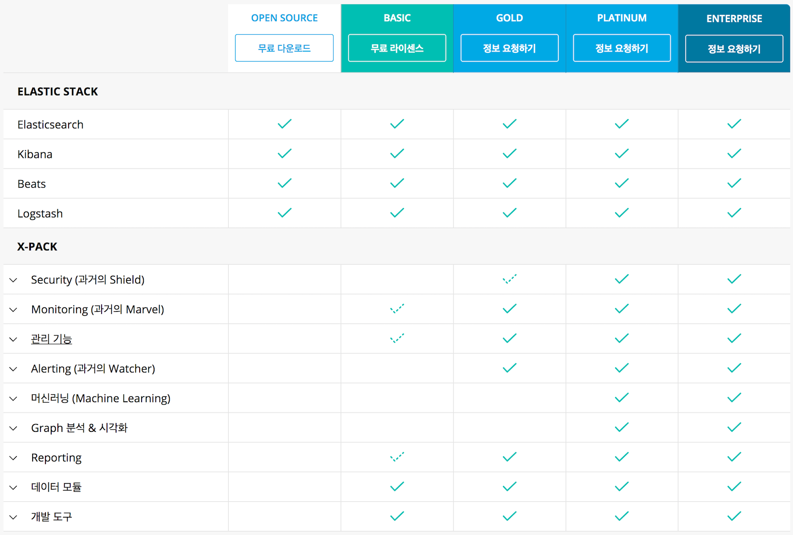
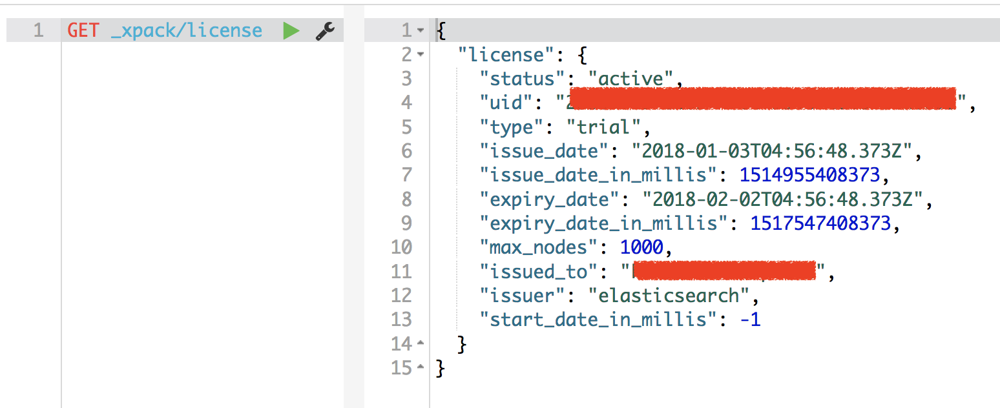
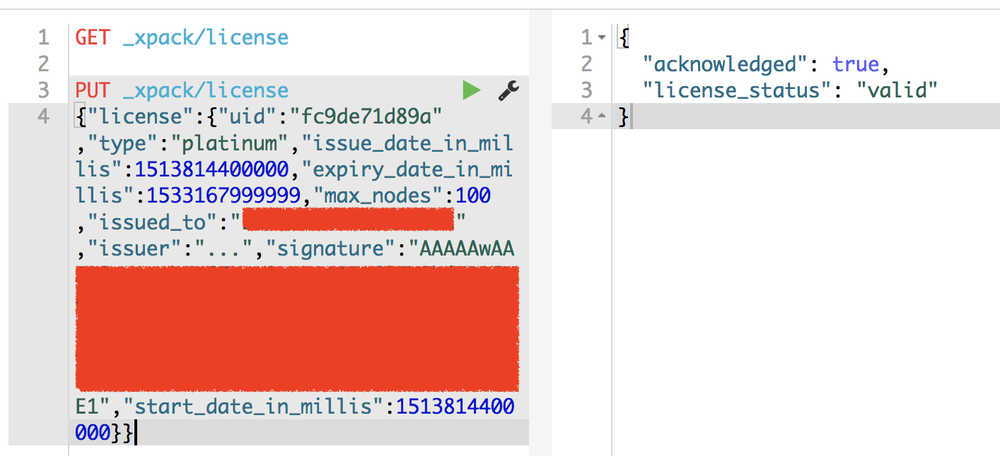
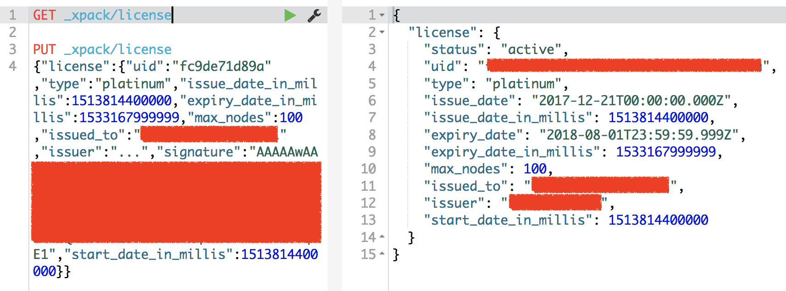
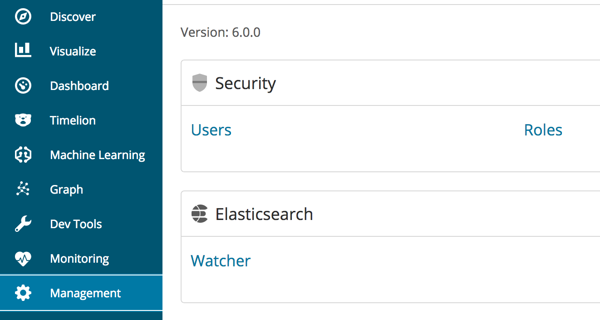
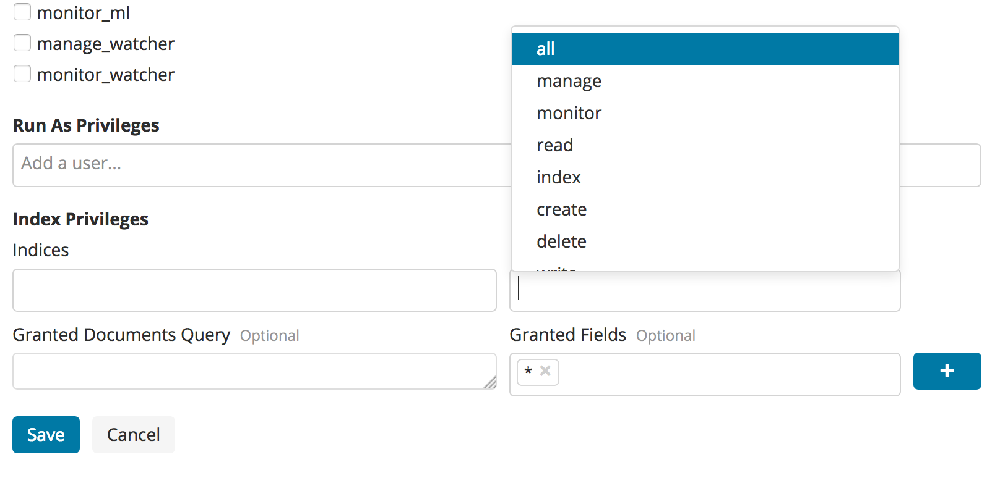
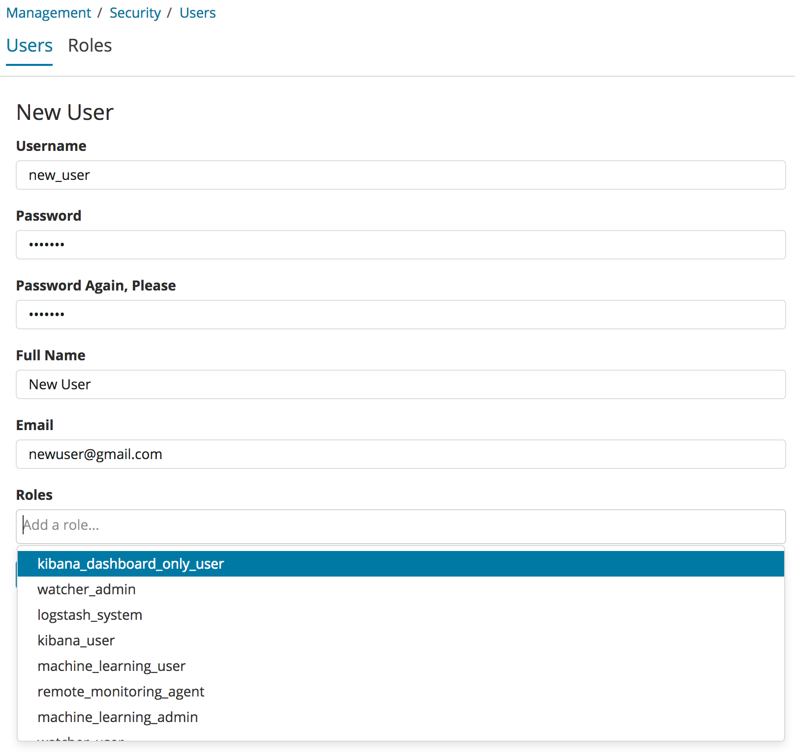

이번 포스트에서는 X-Pack License 적용 및 신규 사용자 생성을 하도록 하겠습니다. 이전 또는 이후 내용들은 아래 포스트에서 확인하세요.
1. 서버 생성 및 Elasticsearch RPM 설치
2. 메모리, 네트워크 설정 및 플러그인 설치
3. 클러스터 구성 및 마스터, 데이터 노드 설정
4. Kibana 설치 및 X-Pack Monitoring 확인
5. NFS 구성 및 elasticsearch 추가 설정
6. X-Pack Security를 이용한 SSL 및 TLS 설정
7. X-Pack License 적용 및 사용자 생성
8. Logstash 설치 및 Elasticsearch 기본 템플릿 설정
X-Pack License 적용
X-Pack 을 설치하면 기본적으로 30일 간 Trial 버전으로 사용이 가능합니다. X-Pack는 각각 Basic(무료), Gold, Platinum, Enterprise(ECE) 라이센스들이 있으며 각 라이센스 별 기술과 기능의 지원 범위는 아래 페이지에서 확인 가능합니다.
https://www.elastic.co/kr/subscriptions

Elastic Stack - Elasticsearch, Logstash, Kibana, Beats 는 완전한 오픈소스 라이센스이고, X-Pack Monitoring의 경우 Basic 라이센스를 통해 사용이 가능합니다. 그 외의 기능은 Gold 이상의 라이센스가 필요하며 Graph, Machine Learning 의 경우 Platinum 이상에서 제공됩니다. 라이센스는 Elastic사와 구독을 통해 기술지원 계약을 맺게 되면 라이센스가 저장된 키 파일을 제공받습니다.
라이센스 키는 json 문서가 저장된 .json 형태의 파일입니다. 라이센스는 _xpack/license API에 저장이 되는데, 먼저 GET 명령으로 이 API를 적용시켜 보면 현재 라이센스 정보를 확인할 수 있습니다. 아래는 라이센스가 적용되지 않은 Trial 상태의 라이센스 정보입니다.

상태는 "type":"trial", 만료 일자는 설치 후 30일인 "expiry_date":"2018-02-02..." 로 되어 있는것을 확인할 수 있습니다.
이제 아래 링크의 문서를 참고해서 라이센스를 적용 해 보겠습니다.
https://www.elastic.co/guide/en/x-pack/current/installing-license.html
라이센스 키를 적용하기 위해서는 먼저, curl 명령을 통해 를 통해 라이센스 파일의 내용을 PUT 하는 방법이 있습니다.
curl -XPUT -u elastic 'https://192.168.0.10:9200/_xpack/license' -H "Content-Type: application/json" -d @es-demo-fcc1-580-8dd0-8a389a-v5.json |
또는 라이센스 파일의 내용을 Kibana의 Dev Tools 에서 PUT 으로 입력해도 됩니다.

라이센스 적용 후 다시 GET _xpack/license API를 확인 해 보면

상태가 "type":"platinum", 만료 일자는 계약 만료일인 "expiry_date":"2018-08-01..." 로 변경 된 것을 확인할 수 있습니다.
참고로 이전 포스트에서 설정한 TLS 설정이 활성화 되어 있지 않으면 X-Pack 라이센스가 적용이 되지 않습니다. TLS 설정은 X-Pack Gold 이상을 사용하기 위한 최소한으로 해 주어야 하는 설정입니다.
사용자 생성
X-Pack 이 설치되면 Kibana의 Management 메뉴에 Security 를 설정하는 메뉴가 나타납니다. Security 에서는 사용자(User)와 권한(Role)을 생성하거나 관리할 수 있습니다.

Roles 메뉴에서 허용할 인덱스, 필드 및 도큐먼트에 대한 접근 권한들을 설정할 수 있습니다.

Roles 메뉴의 항목들은 다음과 같습니다.
- Name: 권한 이름. 1개의 영문+숫자 단어여야 합니다.
- Cluster Privileges: 클러스터에 대한 권한
- Add a user…: 이 권한을 적용받는 사용자. 이 항목은 비워 둔 다음 권한을 먼저 만들고 나중에 사용자를 만들때 권한을 적용하는것도 가능합니다.
- Indices: 접근 가능한 인덱스들.
*로 설정하면 모든 인덱스에 접근이 가능합니다. - Privileges: 앞의 인덱스들에 대해 read, create, delete 등의 권한 설정이 가능합니다.
- Granted Documents Query: 해당 권한의 사용자가 쿼리를 할 때 항상 적용 될 서브쿼리를 적습니다. 권한에 따라 특정 도큐먼트를 필터링 하기 위함입니다.
- Granted Fields: 이 권한의 사용자에게는 이 항목에 입력된 필드들만 나타납니다. 권한에 따라 특정 필드를 필터링 하기 위함입니다.
또한 Users 메뉴에서 신규 사용자의 생성이 가능합니다.

Roles 항목 에서 이 사용자에게 어떤 권한을 부여할지 입력합니다. 권한은 1개 이상이 될 수 있으며 여러개의 권한을 부여하는 경우 부여된 모든 권한에 대해 접근 가능 범위가 적용이 됩니다. 다시말해 OR 조건으로 권한이 부여되며 어떤 유저가 superuser 그리고 new_user 의 권한을 부여받으면 이 유저는 superuser 권한이 가진 모든 권한을 헹사할 수 있습니다. 그렇기 때문에 적용할 권한은 최소한, 겹치는 영역 없이 하는것이 (가능하면 1 사용자 : 1 권한) 바람직합니다.
다음 포스트에서는 Elastic Cluster 구성 시리즈의 마지막으로 Logstash 설치 및 Elasticsearch 기본 템플릿 설정에 대해 살펴보도록 하겠습니다.
1. 서버 생성 및 Elasticsearch RPM 설치
2. 메모리, 네트워크 설정 및 플러그인 설치
3. 클러스터 구성 및 마스터, 데이터 노드 설정
4. Kibana 설치 및 X-Pack Monitoring 확인
5. NFS 구성 및 elasticsearch 추가 설정
6. X-Pack Security를 이용한 SSL 및 TLS 설정
7. X-Pack License 적용 및 사용자 생성
8. Logstash 설치 및 Elasticsearch 기본 템플릿 설정